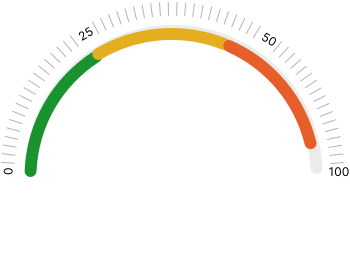

Calculadora Cobre
El sitio web contiene una calculadora que permitire estimar la huella ambiental de la extracción de cobre y convertir las toneladas de mineral sulfurado en toneladas de cobre fino utilizando anodos y cátodos. Esto ayuda a tomar decisiones informadas y conscientes en el ámbito de la industria del cobre.
Ingresar
Toneladas de mineral sulfurado
Resultados
Toneladas de Cobre Fino
0000 tonUnidades de Ánodos
0000 unidadesUnidades de Cátodos
0000 unidadesHuella de Carbono
 0%